1. Why testing a generative system feels wrong (and what replaces the old tools)
Rung 1: the one-paragraph version. Traditional software testing assumes one right answer: assert f(2) == 4. A language model breaks that assumption on purpose. The same prompt, asked twice, returns two different wordings that can both be correct.
Temperature is the dial that controls how adventurous the model's word choices are. Low temperature picks the most likely word each time. High temperature samples from less likely words. Sampling is that random draw itself: every output is a sample from a distribution (the model's probabilities over what could come next), not a lookup from a table.
So exact-match assertions, the workhorse of unit testing, fail on correct answers. What replaces them: assertions about properties of the output instead of its exact text. Is it faithful to the retrieved documents? Does it parse? Did the agent call the right tool? Those properties are checkable, and everything in this volume is machinery for checking them at scale.
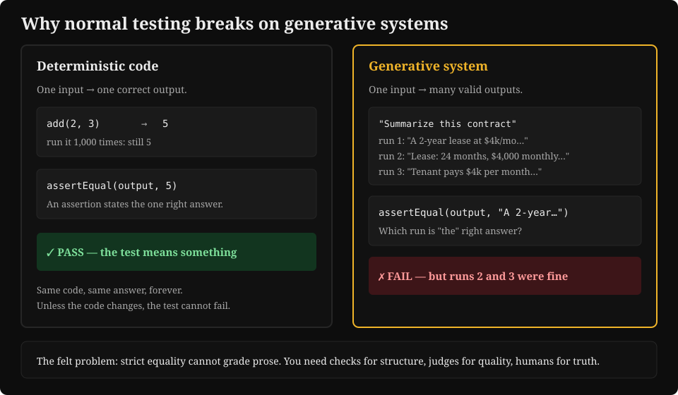
- Left panel: deterministic. Input 2 enters a function box, output 4 leaves. One arrow, one answer, every time. This is the world
assertwas built for. - Right panel: generative. One prompt enters the model. Three different answers leave, each a valid sample from the distribution. The dial labeled temperature controls how spread out the samples are.
- The mismatch: an exact-match test written against answer A fails answers B and C, even though a human would accept all three. The test is wrong, not the model.
Teaching point: every D4 scenario about "the tests keep failing but the answers look fine" is this diagram. The fix is never a stricter string match; it is a property the test should have checked instead.
Rung 2: one level deeper
A concrete example. Ask a summarizer twice to summarize the same earnings paragraph. Run one says: "Revenue grew 12 percent on strong cloud demand." Run two says: "Cloud demand drove a 12 percent revenue increase." Both are correct. They share no five-word phrase in common, so an exact-match test against run one fails run two. A test written against meaning, "does the summary state the 12 percent figure and the cloud cause", passes both. That is the whole shift: test the property, not the prose.
Three replacements cover everything exact match used to do:
- Deterministic checks on the deterministic parts. Most of a production pipeline is not generative at all: retrieval, parsing, tool routing, schema validation, PII filtering. Those parts get traditional tests. Section 4 builds this layer first, before the harness scores any model.
- Property judges for the generative core. A rubric ("does the answer cite its sources? is the tone appropriate?") scored by a separate model or a sampled human. Section 5 builds this grader and its failure modes.
- Statistical assertions over many runs. Instead of "this output equals that string", ask "does at least one of five tries succeed" (pass@k, pronounced "pass at k"). A second form: "is the mean score above the bar with a tight spread". Section 7 uses these to compare versions fairly.
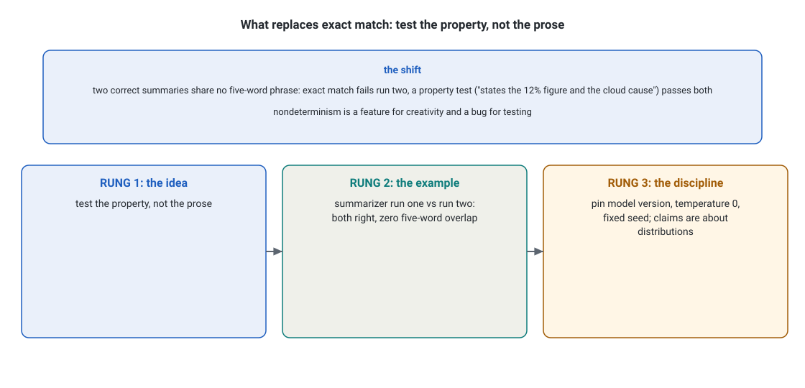
- The blue banner is the shift. Two correct summaries can share no five-word phrase. Exact match fails one of them. A property test passes both.
- The three rungs build up. Rung 1 is the idea. Rung 2 is the concrete summarizer example. Rung 3 is the discipline: pin the model version, temperature 0, and a fixed seed.
- Takeaway: because outputs vary, a single example proves nothing. Every claim in this volume is a claim about a distribution.
Rung 3: the full picture
Nondeterminism is a feature for creativity and a bug for testing. Eval work pins it down. Fix the model version. Set temperature low or to zero for eval runs. Fix the random seed where the API allows it. A moving model makes before/after comparisons meaningless.
That is why the test framework in section 4 pins versions. It is also why the A/B method in section 7 randomizes properly instead of eyeballing. One more consequence: because outputs vary, a single example proves nothing. Take the claims in this volume: "prompt B is better", "the new model regressed", "the judge agrees with humans". Each is a claim about a distribution. The volume's machinery exists to make such claims honestly.
Scenario shape: "the tests keep failing but the answers look fine", or a team proposing exact-match assertions on model output. The credited move names the mismatch: outputs are samples, so assert properties (faithfulness, schema, tool choice) or score over many runs, never exact strings. The trap: "lower the temperature to zero and exact-match everything" (hides the variance instead of measuring it, and zero temperature does not guarantee byte-identical outputs across versions).
The rule to carry: deterministic parts get deterministic tests; the generative core gets property checks and statistics. Mixing them up, exact-matching prose or eyeballing infrastructure, is how teams fool themselves.
Exam relevance: this is the lens for the whole domain. When a scenario describes flaky tests on good outputs, reach for properties and distributions, not stricter matching.
Next: the eval flywheel, the fixed test set that turns iteration from guessing into engineering.
2. The eval flywheel: why evaluation comes first
Section 1 proved the old tests cannot work on generative systems: outputs are samples, so you test properties and distributions. This section builds the machine that does it: the eval loop, and the fixed test set every version gets measured against.
Evaluation (eval) means scoring your system on a fixed set of test cases so you can compare versions. An eval is not a demo. A demo shows what the system can do once. An eval shows what it does every time, on cases you chose in advance.
Rung 1: the one-paragraph version. Production LLM work is a loop: ship a change, measure it against a fixed test set, diagnose the failures, fix them, measure again. Without the fixed test set, every iteration is a guess. You cannot tell whether a new prompt helped or hurt, because each conversation you eyeball is a different sample. Evals turn opinions into numbers. Almost every D4 question is secretly a question about this loop.
Should the team go live: run the eval. Which of two prompts is better: run the eval. Did the new model version break anything: run the regression eval. The correct answer is almost never "trust the demo" or "eyeball a few examples".
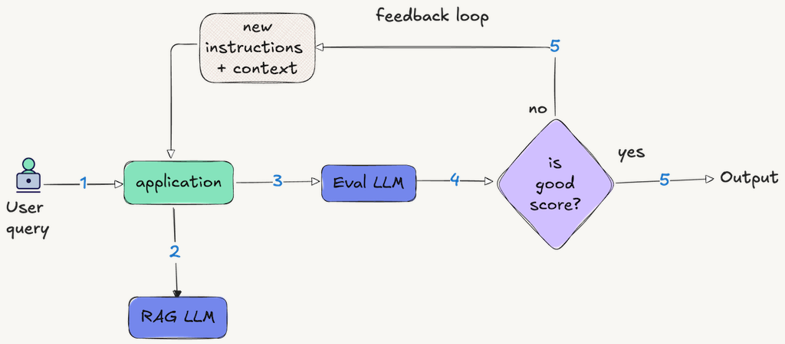
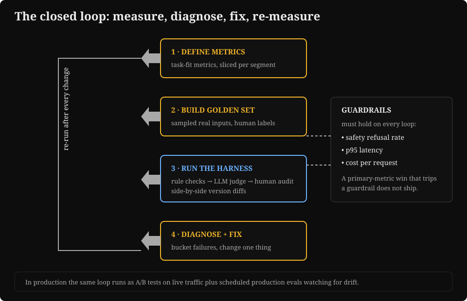
Source: Weaviate blog, "Evals for enterprise workflows" (weaviate.io). Diagram reused for teaching; original text labels preserved.
- Start at the bottom left: a user query enters the system.
- Follow arrow 1 into the application (green box). This is your Claude pipeline.
- Arrow 2 goes down to a RAG LLM: the application retrieves documents and generates an answer. (RAG means retrieval-augmented generation: the model reads your documents before answering.)
- Arrow 3 carries the answer to an Eval LLM: a separate model call that grades the answer against your rubric. This is LLM-as-judge, covered in section 5.
- Arrow 4 reaches the diamond: is it a good score?
- Yes (arrow 6): the answer ships as output.
- No (arrow 5): the failure loops back to the top as new instructions plus context, improving the next attempt.
Teaching point: the eval is not a one time gate. It sits inside the loop, scoring every output and feeding failures back. If the Eval LLM box fails (bad rubric, biased judge), the whole loop optimizes toward the wrong target. That is why sections 4 and 5 matter.
Scenario shape: a team argues about whether a new prompt is better, each side showing hand picked examples. The credited answer is the one that proposes a fixed eval set and compares both versions on it. The trap answers are "ship the one the senior engineer prefers" and "eyeball more examples".
The discipline to carry: evals are not a pre-launch checkbox. They run before launch (to decide if you are ready), after every change (to catch regressions), and continuously in production (to catch drift as data and models change). A team that evals once has a snapshot. A team that evals always has a steering wheel.
Exam relevance: this loop is the frame for every other section. When a question asks what to do first, the answer is usually "measure": define metrics, build the eval, then decide.
Next: defining metrics, choosing the number each task actually needs before anything gets measured.
3. Defining metrics: measure what the task actually needs
The loop needs numbers to turn. A loop without metrics is a demo with extra steps. This section defines the numbers: what to measure, and how to pick the metric the task actually needs.
A metric is a number you compute the same way every time, so you can compare versions of your system fairly. Defining metrics is the first official objective. It is also where most real projects go wrong. They pick a metric that is easy to compute instead of one that matches the task.
Rung 1: the one-paragraph version. Before you build, decide how you will know it works. One number per thing you care about: right answers (accuracy), speed (latency), money (cost), harm (safety), attacks (security). Pick the wrong number and you will optimize the wrong thing. You might ship a contract reviewer that is 96 percent right overall. It is wrong on one in ten privacy contracts (the worked example below).
The five metric families
- Accuracy (quality). Did the output do the job right? The exact formula depends on the task (see the table below). Never assume one formula fits all.
- Latency (speed). How long from request to usable response. Report percentiles, not averages: p50 is the median (half of requests are faster), p95 means 95 percent of requests finish within this time, p99 is the worst realistic case. Users feel the p95, not the mean. Averages hide the slow tail.
- Cost. Tokens in, tokens out, tool calls, judge calls. Usually expressed per request or per thousand requests. Cost is a first class metric because LLM bills scale with usage, and a quality win that triples cost can still be a bad decision.
- Safety. Rate of harmful, biased or disallowed outputs: refusal rate on attacks, toxicity scores, bias across demographic groups. Measured on adversarial test sets, not normal traffic.
- Security. Rate of prompt injection success, data exfiltration attempts blocked, PII (personally identifiable information) leaked. Like safety, measured with attack style test cases.
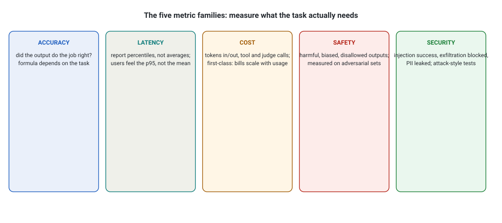
- Each card is one family. Accuracy asks whether the output did the job. Latency reports percentiles because users feel the p95, not the mean. Cost is first-class because bills scale with usage.
- Measure safety and security on adversarial test sets, never on normal traffic.
- Takeaway: the metric must fit the task shape, or it lies.
Match the metric to the task
Rung 2: one level deeper. The metric must fit the task shape, or it lies.
Precision is: of everything the system flagged, how many were correct. Recall is: of everything it should have flagged, how many did it catch. F1 is the harmonic mean of the two, a single number that punishes a system that is great at one and terrible at the other.
P = TP / (TP + FP) R = TP / (TP + FN) F1 = 2PR / (P + R)
where: TP, true positives (the system flagged them, and it was right). FP, false positives (the system flagged them, but they were innocent). FN, false negatives (missed: the system should have flagged them). F1 is the harmonic mean, so a terrible score on either side drags the total down.
Worked example. A fraud detector flags 100 transactions. 80 are real fraud (TP = 80, FP = 20). There are 120 real frauds in total (FN = 40). P = 80/100 = 0.80.
R = 80/120 ≈ 0.667. F1 = 2 × 0.80 × 0.667 / (0.80 + 0.667) ≈ 0.727. The read: it avoids most false alarms, but it misses a third of the fraud. For fraud, recall is the metric that matters, because a missed fraud costs more than a false alarm.
| Task type | Right metric | Why |
|---|---|---|
| Classification (spam or not, contract type) | Precision and recall per class, F1 | Plain accuracy hides class imbalance (see the worked example below) |
| Extraction (dates, amounts, names) | Field level exact match or F1 | One wrong field can void a contract, so partial credit must be strict |
| Open generation (summaries, drafts) | Rubric scored by LLM judge or humans (1 to 5 per criterion) | No single right answer exists, so you score dimensions like completeness and faithfulness |
| Agentic task (multi step tool use) | Task success rate, steps to completion, tool error rate | A correct final answer reached in 40 wasteful steps is a different system than one that does it in 6 |
| Latency sensitive (chat, voice) | p50 and p95 time to first token and total time | Streaming means the first token matters separately from the full answer |
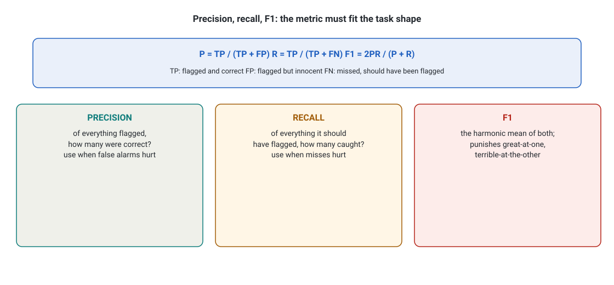
- The blue banner gives the formulas: precision is TP over TP plus FP, recall is TP over TP plus FN, F1 is their harmonic mean.
- Precision answers: of everything flagged, how many were correct. Recall answers: of everything it should have flagged, how many were caught.
- Takeaway: F1 punishes a system that is great at one and terrible at the other. Pick the metric the task's cost of being wrong demands.
Worked example: the trap of aggregate accuracy
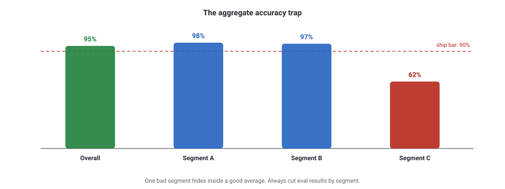
- The green bar shows 95 percent overall. It looks safe.
- The red bar shows segment C at 62 percent. The average hides it.
- Takeaway: score every metric per segment, not just overall.
Rung 3: the full picture: the most tested idea in D4. This appears almost verbatim in community exam reports. A contract review assistant must reach at least 95 percent accuracy on each of five contract types. On a 1,000 contract eval set it scores 96 percent overall. The team wants to go live. Should they?
Do the arithmetic on a concrete case. The set holds 200 contracts of each of the five types. The system scores: Employment 98, NDA 99, Lease 97, Vendor 96, Privacy 90 percent. Correct answers: 196 + 198 + 194 + 192 + 180 = 960 out of 1000, which is 96 percent overall.
The overall number passes. The Privacy segment at 90 percent fails the 95 percent bar. The system reviews one in ten privacy contracts wrong, and the average hides it completely. That is the whole trap in one paragraph.
The fix: segmented (sliced) metrics. Compute every metric per contract type, per language, per customer tier, per input length, whatever dimensions matter. The launch gate becomes "every segment passes", not "the average passes".
overall: 96% (celebrated) per type: 98 / 99 / 97 / 96 / 90
target: 95% per type Privacy = 90% <-- FAILS the bar
rule: the average never satisfies a per-segment requirement
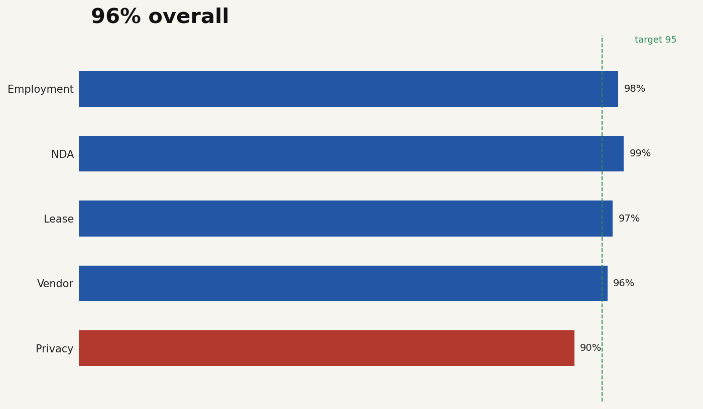
- Read the big number first: 96% overall. This is what the team celebrates.
- Find the dashed green line: the target of 95%. It applies to each bar, not just the average.
- Scan the blue bars: Employment 98, NDA 99, Lease 97, Vendor 96. All pass.
- Stop at the red bar: Privacy at 90%. The system reviews one in ten privacy contracts wrong.
- Ask the exam question: does "96% overall" satisfy "at least 95% on each type"? No. The red bar is the answer.
Teaching point: whenever a scenario gives you an overall number and a per-segment requirement, the credited answer always drills into segments. "Ship it, 96% beats 95%" is the trap.
Scenario shape: a target like "95% accuracy on each of five document types" plus an overall number that looks passing. The trap answers: go live on the aggregate, switch to a bigger model, add more training data. The credited answer: measure per segment, fix the failing segments first. A second shape: pick the right metric for the task (precision vs recall for a fraud detector where missing fraud costs more than false alarms: recall matters more).
The traps to carry: "high accuracy means the model is good" is a distractor. Accuracy is a property of the system on a specific test set, not a property of the model. The same model scores differently on different segments, different prompt versions and different judges. Always ask: accuracy of what, on which data, measured how.
And when you optimize one metric, name the metrics that must not regress. These are guardrail metrics: safety rate, p95 latency, cost per request. An A/B test ships only if the primary metric improves AND every guardrail holds.
Exam relevance: metric definition is the foundation every other objective builds on. Expect 2 to 3 questions where the right move is to choose or slice a metric before acting.
Next: eval datasets and test frameworks, the golden data and the harness that runs it.
4. Eval datasets and test frameworks: checks first, then gold
Metrics say what to measure. This section says what to measure against: the golden dataset and the test framework that runs it. Checks first, then gold: deterministic checks before model-graded ones.
Golden dataset: a fixed set of inputs with known good answers, curated by hand. You test every version of your system against it. Regression suite: the subset you run after every change to prove nothing that used to work broke. A golden dataset is the asset; the regression suite is how you use it daily.
Rung 1: the one-paragraph version. An eval program has three layers, built in this order. First, functional checks: deterministic, exact-match tests on the parts of the pipeline that are not generative at all. Did retrieval return the right document IDs?
Does the output parse as JSON? Did the agent call the right tool with valid arguments? Did any PII leak into the logs? These run on every commit like unit tests: fast, free, zero judgment calls.
Second, the golden dataset: a few hundred hand-verified input/output pairs sampled from real traffic, the ground truth for quality. Third, the test framework: the harness that runs the golden set, scores it with layered methods, and diffs versions side by side. Teams that start with the judge and skip the functional checks end up paying model dollars to catch bugs a regex would have found.
The deterministic layer: functional checks
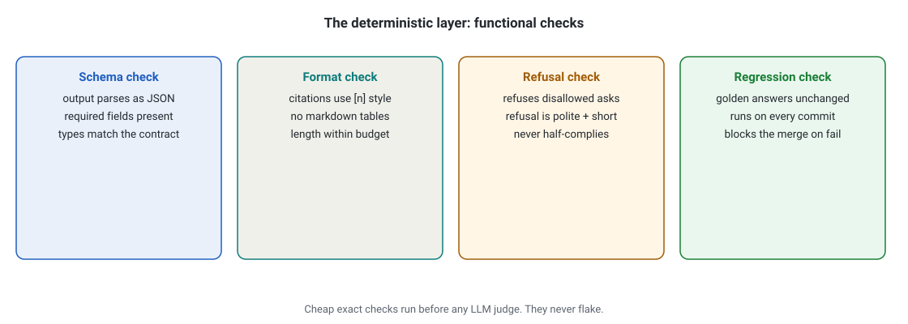
- Each panel names one exact check and what it verifies.
- These checks are cheap and never flake.
- Takeaway: run them before any LLM judge.
Rung 2: one level deeper. Section 1 drew the line between deterministic and generative behavior. The eval program starts on the deterministic side, because those checks are cheap and total. For a RAG pipeline: assert the retriever returned the expected document IDs for known queries.
For an agent: assert it called the right tool with schema-valid arguments. For any pipeline: assert the output parses (JSON schema validation), assert no PII or secrets appear in outputs or logs, assert latency under the budget. These are traditional software tests wearing an AI costume, and they belong in CI on every commit. A change that breaks a functional check blocks the merge before the harness scores any model.
The golden dataset
Once the deterministic checks hold, the generative core needs its own ground truth. Start from production reality, not imagination. Sample real user inputs, anonymize them, and have domain experts write or verify the expected answers. Aim for coverage across the segments from section 3: every contract type, every language, short and long inputs, easy and adversarial cases. A few hundred well chosen cases beat ten thousand near duplicates.
Three hygiene rules:
- Label quality beats size. One wrong expected answer poisons every comparison. Have a second person spot check labels, and track inter-rater agreement (do two labelers agree? If not, the task definition is fuzzy, not the labelers).
- Keep a held-out split. Never tune prompts against the full set. Tune on a dev split, report on a held-out test split. Otherwise you grade your own homework: the prompt overfits the test cases and the score lies.
- Version the dataset. When you add cases, bump the version and keep the old one. If scores jump between versions, you need to know whether the system improved or the test got easier.
One anti-pattern the exam loves: a golden set written by the same model that you evaluate. That grades itself with extra steps. The labels inherit the model's blind spots.
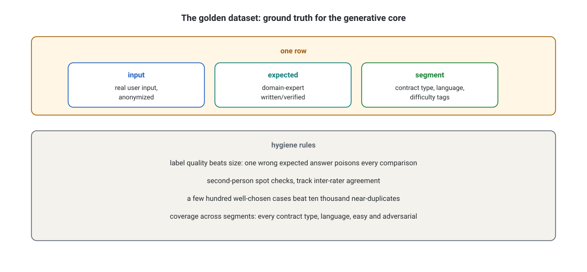
- The amber panel shows one row: a real, anonymized user input, a domain-expert-written expected answer, and segment tags like contract type, language, and difficulty.
- The gray panel lists the hygiene rules: label quality beats size, spot-check with a second person, a few hundred well-chosen cases beat ten thousand near-duplicates.
- Takeaway: start from production reality, not imagination, and keep one wrong expected answer from poisoning every comparison.
The test framework around the dataset
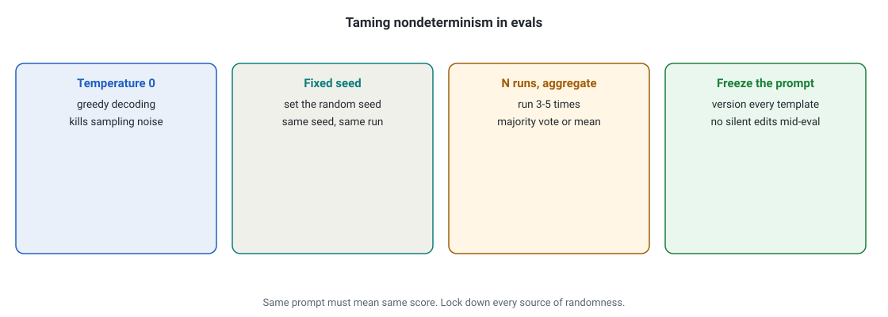
- Each panel locks down one source of randomness.
- Temperature 0 and a fixed seed make single runs repeatable.
- Takeaway: the same prompt must mean the same score.
Rung 3: the full picture. A dataset alone is a spreadsheet. A test framework is the harness that runs it. It feeds each input to the system. It captures outputs plus traces.
It scores them with the layered methods below. It stores results per version. It diffs versions side by side. No single scoring method fits every case, so production evals layer three methods, cheapest first:
volume: many RULE CHECKS (exact match, schema, tool args) fast, free
volume: bulk LLM JUDGE (rubric scoring) dollars overnight
volume: few HUMAN REVIEW (taste, nuance, high stakes) the gold standard
|
humans also calibrate the layers below
- Deterministic (rule based) checks. The functional checks from Rung 1, now running inside the harness. Exact match, regex, JSON schema validation, "did it call the right tool with valid arguments". Fast, free, zero judgment calls. Use for everything checkable by code.
- LLM-as-judge. A separate model scores outputs against a rubric (section 5). Handles open ended quality that rules cannot, at a fraction of human cost.
- Human review. Slow, expensive, and the gold standard for taste, nuance and high stakes calls. Reserve for sampled audits, judge calibration and launch gates.
The pattern: rules catch the obvious, the judge scores the bulk, humans audit the sample. Most traffic never reaches a human, but the human layer keeps the other two honest.
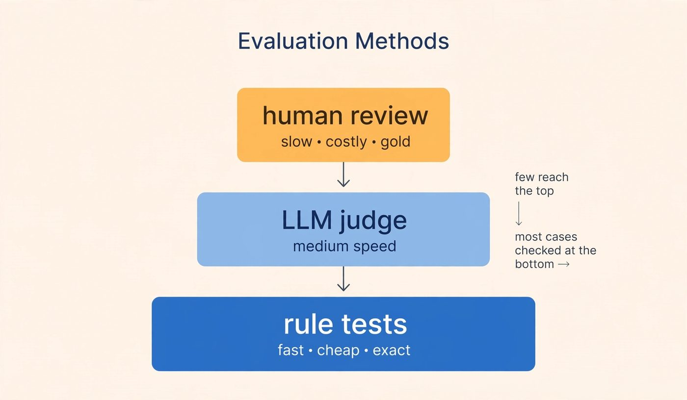
- Start at the narrow top layer: human review. Slow, costly, and the gold standard. Only a few cases reach here, as the side note says.
- Move down to the middle: the LLM judge. Medium speed, medium cost. It scores the bulk that rules cannot decide.
- End at the wide bottom layer: rule tests. Fast, cheap, exact. The harness checks most cases here, as the side note says.
- Notice the shape: wide at the bottom, narrow at the top. Cost and care rise as volume falls. Humans also calibrate the layers below, keeping the whole stack honest.
Teaching point: exam scenarios often hand you a limited budget and ask how to evaluate thousands of outputs. The credited answer layers methods by cost, never "have humans grade everything" (too slow) or "trust the judge alone" (uncalibrated).
The framework properties the exam cares about:
- Determinism where possible. Pin model versions and seeds for eval runs, because a moving model makes before/after comparisons meaningless.
- Side by side diffs. For each case, show old output vs new output with the score delta. Engineers diagnose from diffs, not from averages.
- Failure bucketing. Group failures by type (wrong tool, invented fact, format break) so a 2 percent regression becomes an actionable list.
- CI integration. The functional checks run on every commit; the regression suite runs on every prompt or code change, like unit tests. A change that drops the score blocks the merge.
You might ask: how big should the golden set be?
Big enough that a real regression moves the number, small enough to run fast. A practical rule: start with 200 to 500 cases covering every segment. Then do the statistics. If your system scores 90 percent on 200 cases, the 95 percent confidence interval is roughly plus or minus 4 points.
Only swings bigger than that are trustworthy. If you need to detect a 2 point change, you need roughly 1,000 cases. The exam will not ask you to compute this. It will reward answers that mention statistical power when someone proposes A/B testing on 50 samples.
Scenario shape: a team with no evals, or evals built from the same examples used in the prompt. The credited move: build a golden set from sampled production traffic with human verified labels. Keep a held-out split. Layer rule checks plus judge plus human audit. The trap: "add more few shot examples from the test set" (contamination) or "just run it on 20 examples the engineer wrote" (unrepresentative).
The contamination rule to carry: test cases leaking into prompts, few shot examples or fine tuning data inflates scores and hides real weakness. Keep few shot examples and test cases strictly separate. If a case appears in the prompt, it cannot also be in the test.
Exam relevance: dataset design questions test judgment under constraints: representativeness, label quality, held-out splits, and mixing methods by cost. Look for the answer that balances all four.
Next: LLM-as-judge, the grader you must not trust blindly.
5. LLM-as-judge: a powerful grader you must not trust blindly
Section 4 layered three scoring methods: rules, judge, humans. The judge is the middle layer: cheap enough to score ten thousand outputs overnight, untrustworthy enough to lie to you. This section is the calibration discipline that keeps it honest.
LLM-as-judge means using one language model to grade another model's output. You give the judge the input, the output, and a rubric (a scoring guide), and it returns a score plus reasoning. It exists because human grading does not scale: a judge can score ten thousand summaries overnight for dollars, where humans would take weeks.
Rung 1: the one-paragraph version. The judge is a grader, not a source of truth. Its score is a proxy, meaningful only for comparing versions scored by the same judge, same rubric, same model version. Treat judge scores as relative (A beats B), never as absolute (A is excellent). The exam's whole section is about the judge's four biases and the discipline that keeps them from lying to you.
How it works under the hood
Rung 2: one level deeper. A judge call is a structured prompt, not magic. The recipe:
- Give the rubric as criteria with anchors. Not "rate quality 1 to 5" but "5: every claim in the summary appears in the source; 3: one unsupported claim; 1: contradicts the source". Anchors (concrete descriptions per score) are what make judges consistent.
- Ask for verdict plus reasoning. Reasoning first, then the score: models score more reliably when they explain before deciding.
- Pin temperature to 0. Temperature controls randomness: 0 means the most likely token every time (deterministic), higher means more creative sampling. A judge must be deterministic, so temperature 0.
- Parse the score as structured output. Force JSON with a schema so "4" never arrives as "four-ish".
The failure modes (the exam loves these)
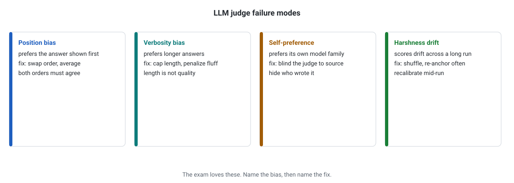
- Each card names one bias and shows its fix.
- Position bias: swap the order and average the scores.
- Takeaway: the exam asks for each bias by name.
Rung 3: the full picture. A judge is a model, so it has model biases. Know all four by name:
SELF PREFERENCE judge scores its own model family higher
VERBOSITY BIAS longer answers win, even when the extra words add nothing
POSITION BIAS whichever option comes first wins the pairwise comparison
DRIFT same judge, different scores after a model version update
Each one has a named fix (below and in the walkthrough). The exam describes a symptom and expects the diagnosis.
- Self preference. A judge tends to score outputs from its own model family higher. Fix: judge with a different model family than the one under test, or at least blind the judge to which system produced the output.
- Verbosity bias. Judges reward longer answers even when the extra words add nothing. Fix: add "prefer concise correct answers" to the rubric, or normalize by length.
- Position bias. When comparing A vs B, judges favor whichever comes first (or second, depending on the model). Fix: run both orders and average, or score each output independently instead of pairwise.
- Drift and inconsistency. The same judge scores differently after a model version update, and disagrees with itself on reruns. Fix: pin the judge model version, rerun a calibration sample regularly, and never compare scores across judge versions.
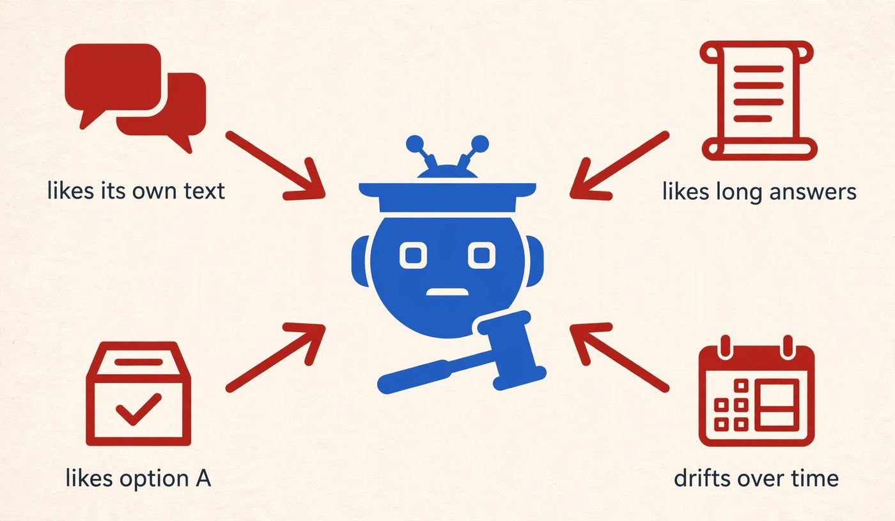
- Center: the judge with its gavel. It looks authoritative. It is not.
- Top left arrow: likes its own text (self preference). A Claude judge grading Claude outputs needs blinding or a different family.
- Top right arrow: likes long answers (verbosity bias). Padding wins unless the rubric punishes it.
- Bottom left arrow: likes option A (position bias). Order of presentation leaks into the verdict.
- Bottom right arrow: drifts over time. The judge you calibrated in January is not the judge you run in June.
Teaching point: every one of these has a named fix. The exam will describe a symptom (scores jumped after a judge model update) and expect the diagnosis (drift: re calibrate, pin versions, do not compare across versions).
Calibration: proving the judge agrees with humans
Rung 4: the exam rung: the discipline that makes the judge trustworthy. Calibration means checking the judge against human graders on a shared sample and measuring agreement. A judge is only as good as its agreement with the humans it stands in for.
As you learned in D2, the scoring rubric belongs in the system prompt, not the user message. A rubric in the user message drifts with every request.
The procedure: take 100 to 200 outputs, have humans score them with the same rubric, have the judge score them, then compute agreement. The standard number is Cohen's kappa. It measures agreement beyond chance. Above 0.8 is strong.
0.6 to 0.8 is acceptable for most uses. Below 0.6 means the rubric or the judge needs work. Recalibrate on a fresh sample whenever the judge model, the rubric or the data distribution changes.
One more rule the exam tests: the judge must never be the system under test grading itself without blinding. "We used the same model to generate and judge, and it says we are great" is a finding of nothing.
Scenario shape: scores improved after the team switched the judge to the same model that generates the answers (trap: celebrate; credited: self preference, re judge blinded or with a different family). Or: the judge prefers the longer of two equal answers (verbosity bias, fix the rubric). Or: scores shifted after a judge model upgrade with no product change (drift, pin versions and recalibrate). Learn to match each symptom to its bias and fix.
The judge rules to carry: "the judge gave us 4.6 out of 5, so quality is 4.6" is always a distractor. A judge score is not an absolute truth. And the judge must never be the system under test grading itself without blinding. "We used the same model to generate and judge, and it says we are great" is a finding of nothing.
Exam relevance: LLM-as-judge questions test whether you know its failure modes and the calibration discipline. If an option says "trust the judge", it is wrong. If it says "calibrate against humans and pin the version", it is probably right.
Next: diagnosing system issues, matching symptoms to causes before you touch anything.
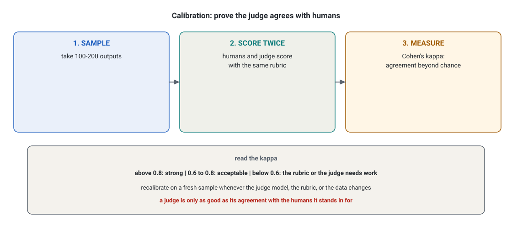
- Follow the arrows. Take 100 to 200 outputs. Have humans and the judge score them with the same rubric. Then compute Cohen's kappa, the agreement beyond chance.
- Read the kappa. Above 0.8 is strong. 0.6 to 0.8 is acceptable. Below 0.6 means the rubric or the judge needs work.
- Takeaway: a judge is only as good as its agreement with the humans it stands in for.
6. Diagnosing system issues: hallucination vs prompt failure vs model mismatch
Evals and judges tell you the system is wrong. They do not tell you why. This section is the triage: hallucination, prompt failure, or model mismatch, matched by symptom before you change anything.
When a Claude system produces bad output, the fix depends on the cause, and the causes need different medicine. The exam names three: prompt failure, hallucination, and model mismatch. Learn to tell them apart by their signatures.
Rung 1: the one-paragraph version. Wrong diagnosis means wrong medicine. If the model invents facts, ground the model with retrieval and citations: a bigger model hallucinates too, just more fluently. If it ignores your instructions, the cure is prompt repair: the capability is there, the directions were unclear.
If the task exceeds what the model can do, the cure is a stronger model or decomposition. The exam describes a symptom and offers fixes from different columns. Match the column first.
the model states as fact something false or unverifiable, with full confidence. It is not lying; it predicts plausible sounding text without grounding.
the model misunderstands or ignores your instructions: wrong format, skipped steps, answered a different question. The capability is there; the directions were unclear, contradictory or buried.
the task exceeds what the chosen model can do: multi hop reasoning it fumbles, a language it barely knows, context longer than it handles well. The prompt is fine; the engine is too small for the hill.
Signature symptoms
Rung 2: one level deeper. The symptom table is the triage tool. Read the symptom, find the row, run the confirming test before you touch anything.
| Symptom | Likely cause | Confirming test |
|---|---|---|
| Confident false facts, invented citations, wrong numbers that look right | Hallucination | Give the model the source text and ask it to quote: if the answer changes, it was ungrounded |
| Right content, wrong format; skipped required steps; answered a different question | Prompt failure | Rewrite the instruction to be explicit and test again: if the behavior flips, the prompt was the bug |
| Reasoning collapses on hard cases, works on easy ones; long context questions degrade | Model mismatch | Run the same prompt on a larger model: if it now works, the small model was the ceiling |
| Good answers sometimes, bad answers other times, same input | Non determinism or flaky tool | Run the same input 10 times at temperature 0: variance points at the model, consistent failure points at the prompt |
| Worked last month, fails now, nothing changed on your side | Model version drift or data drift | Check the provider changelog and rerun the regression suite (section 4) |
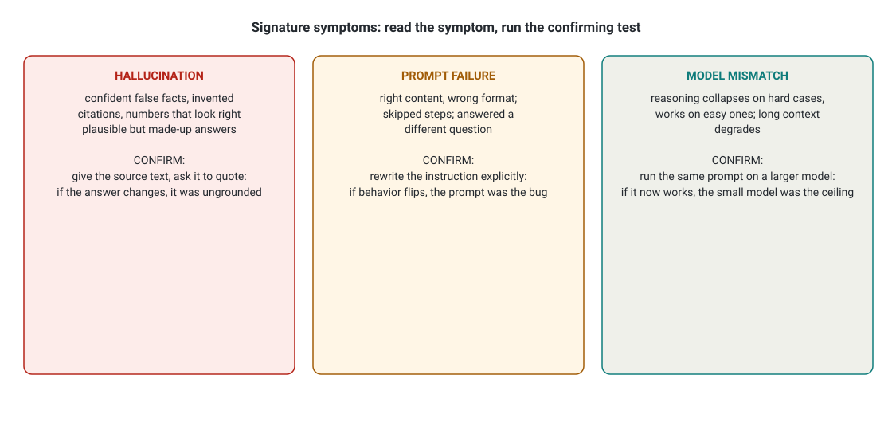
- Each card pairs a symptom with its confirming test. Confirm hallucination by asking the model to quote the source. Confirm prompt failure by rewriting the instruction explicitly. Confirm model mismatch by running the same prompt on a larger model.
- Run the confirming test before touching anything. The symptom table is the triage tool.
- Takeaway: never fix before diagnosing.
The diagnosis procedure
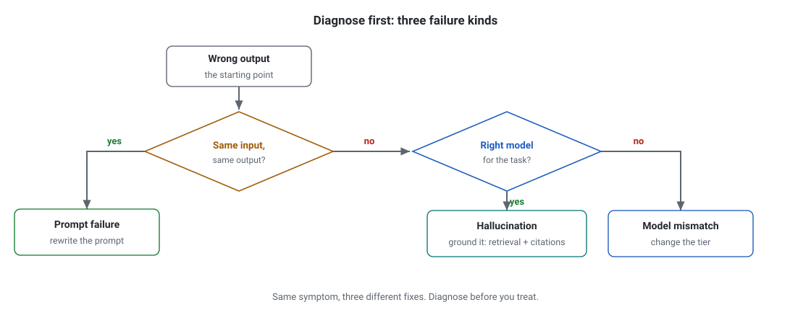
- Start at the top with any wrong output.
- The first diamond asks if the output is deterministic.
- Each answer points to one fix: prompt, grounding, or tier.
Rung 3: the full picture. Four steps, in order. This is the procedure the credited answer follows.
- Reproduce it. Capture the exact input, model version, prompt version and seed. If you cannot reproduce it, you cannot prove you fixed it.
- Isolate the layer. A Claude system has layers: retrieval, prompt, model, tools, post processing. Test each alone. Swap in known good retrieved docs: if the answer fixes itself, retrieval was the fault, not the model.
- Change one thing. Same discipline as A/B testing. If you rewrite the prompt AND switch models, you learn nothing.
- Check the trace. Read the full trace (section 9): what did the model actually see? The trace shows what the final answer hides: truncated context, a failed tool call hidden by a retry, or a system prompt that got overridden.
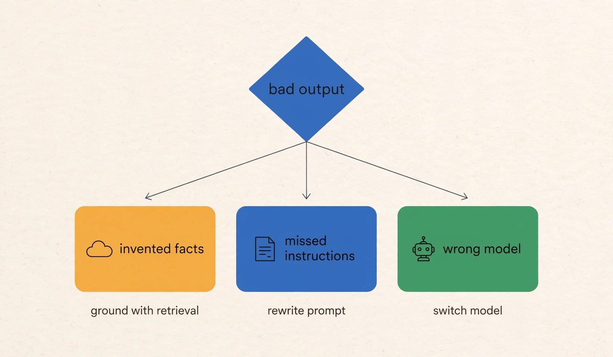
- Top diamond: bad output. Every diagnosis starts here, with a reproduced case.
- Left branch: invented facts. The model made things up. The fix: ground the model with retrieval, citations, and "quote the source" instructions.
- Middle branch: missed instructions. The model can do the task but did not follow directions. The fix is the prompt: explicit steps, format examples, no contradictions.
- Right branch: wrong model. The task is beyond this model. The fix: route up to a larger or more capable model for this segment.
- Read down each column: symptom, then cause, then fix. Never apply a fix from the wrong column.
Teaching point: exam scenarios describe symptoms and offer fixes from different columns. "The model invents case law" plus the option "switch to a bigger model" is a column mismatch. The credited fix is to ground the model with retrieval. A bigger model hallucinates too, just more fluently.
You might ask: what about tool failures?
Tool failures deserve their own bucket. Signatures: the model calls the wrong tool, passes invalid arguments, or ignores a tool result. Causes split the same three ways. The tool description was unclear (prompt failure, fix the description and add examples).
The model invented the arguments (fix with grounding, validate with schemas). The third cause: the task needs planning the model cannot do (mismatch, decompose into smaller steps). Always validate tool arguments against a schema before executing: it turns silent corruption into loud, diagnosable errors.
Scenario shape: a symptom description plus four candidate fixes. Match symptom to cause to fix. Invented facts need grounding (retrieval, citations). Ignored instructions need prompt repair.
Hard reasoning failures need a stronger model or decomposition. The traps are cross column fixes. Watch especially for "upgrade the model" on what is clearly a prompt or retrieval problem. And "rewrite the prompt" on what is clearly beyond the model's capability.
The first-resort rule to carry: "bad output means we need a better model" is the most expensive distractor. Model upgrades do not cure prompt failures or ungrounded generation. Diagnose first: most production issues are prompt or retrieval problems wearing a model costume.
Exam relevance: diagnosis questions test the triage discipline: reproduce, isolate the layer, change one thing, read the trace. The credited answer names the cause before the cure.
Next: A/B testing, comparing versions on live traffic without fooling yourself.
7. A/B testing and iterative improvement
Offline evals compare versions on fixed cases. Some questions need real users: novelty effects, distribution shift, business outcomes. This section is the A/B discipline that answers them without fooling yourself.
A/B test: split live traffic randomly between the current system (A, the control) and a changed version (B, the variant), then compare them on the same metrics. It exists because offline evals cannot capture everything: real user behavior, real input distributions, and real business outcomes only appear in production.
Rung 1: the one-paragraph version. An A/B test answers one question: is the new version actually better, in production, on real users? The discipline around the test matters more than the statistics. One variable at a time.
The same metrics on both arms. Guardrails that must not regress. Enough runtime to cover weekly patterns. No stopping early because day one looked good.
Designing the test
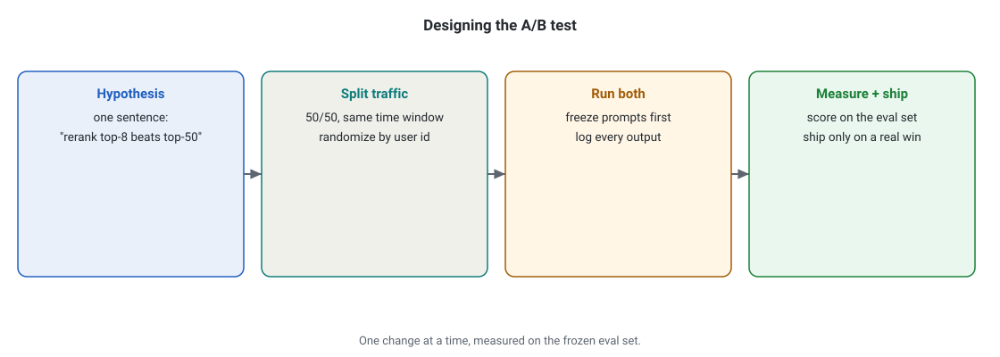
- Follow the arrows left to right.
- Each step has one job. Hypothesis first, shipping last.
- Takeaway: change one thing at a time.
Rung 2: one level deeper. Five design rules. The exam tests the discipline, not the math.
- One change at a time. If B differs from A in prompt, model and retrieval settings, a win tells you nothing about what worked. Change one variable per test.
- Pick the randomization unit. Usually the user or the session, not the request. If one user sees A on one message and B on the next, the experience is inconsistent. Mixed arms pollute the data. Hash the user ID into a bucket and keep them there for the whole test. Engineers call this sticky bucketing.
- Name the primary metric and the guardrails up front. Primary: the thing you hope improves (task success rate). Guardrails: the things that must not regress (safety refusal rate, p95 latency, cost per session). Writing these down before the test prevents cherry picking the metric that happened to win afterward.
- Size it for the effect you care about. Small traffic or a tiny expected gain means a long test. A test that is too short produces noise, not answers. As a rule of thumb, you need enough samples that the observed difference would rarely happen by chance. If traffic is thin, prefer offline evals and reserve A/B for big changes.
- Run it long enough to cover weekly patterns. Weekday and weekend users differ. A three day test can mislead; one to two full weeks is the norm for user facing systems.
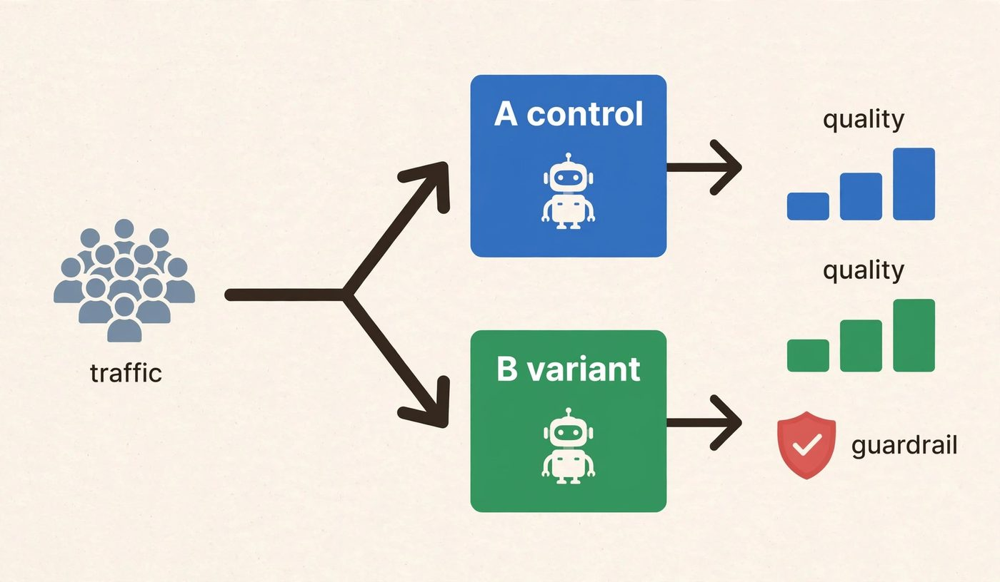
- Left: traffic, the stream of real users. One stream, not two: this keeps the comparison fair.
- The split: one arrow becomes two equal arrows. Random assignment, sticky per user.
- Top path: A, the control. The system as it runs today. It is the baseline you measure everything against.
- Bottom path: B, the variant. Exactly one deliberate change.
- Right: both arms report the same quality gauges, and the red guardrail shield watches safety, latency and cost on both. B ships only if it wins on the primary metric and no guardrail trips.
Teaching point: the exam tests the discipline around the test more than the statistics: one variable, pre registered metrics, guardrails, sufficient runtime. "Ship B because day one looked good" is always the trap.
LLM specific wrinkles
Rung 3: the full picture. Four wrinkles that make LLM tests harder than button-color tests:
- Non determinism. The same prompt can produce different outputs across calls. This adds noise, so LLM A/B tests need more traffic than a button color test. Lower the temperature or average multiple samples when noise threatens the read.
- Judge consistency. If a judge scores the arms, it must be the same judge, same version, same rubric for both. A judge change mid test invalidates the comparison (drift, from section 5).
- Novelty effects. Users react to "new", not to "better", in the first days. Do not call a test on the first 48 hours.
- Carryover. If the variant changes conversation memory or cached state, users crossing between arms contaminate results. Sticky bucketing plus clean state per arm fixes this.
The iteration loop
A/B testing is not one test. It is the loop from section 2 at production scale. Form a hypothesis ("a shorter system prompt cuts latency without hurting quality"). Ship the variant to a slice of traffic. Read primary plus guardrails.
Then promote, kill or iterate. Keep a log of every test with its hypothesis and outcome. Teams that do not write down hypotheses repeat failed experiments. The log is organizational memory.
One caution: peeking (checking results daily and stopping the moment B looks good) inflates false wins. Decide the runtime or the sample target in advance and respect it. If you must peek, use sequential testing methods designed for it. The exam will not ask you to compute them. It may ask you to name them as the fix.
Scenario shape: a team ran an A/B test for two days on 200 users and wants to ship (trap: ship; credited: insufficient sample and runtime, extend or fall back to offline evals). Or: B wins on the primary metric but p95 latency doubled (trap: ship on the win; credited: guardrail tripped, reject or optimize first). Or: users saw both variants across messages (trap: ignore; credited: randomization unit should be the user with sticky bucketing).
The guardrail rule to carry: "the B arm won on quality, so we ship it" is always a distractor. Not until the guardrails clear. A variant that answers better but leaks PII twice as often, or costs three times more per session, fails the test. The credited exam answer almost always checks the guardrails before promoting.
Exam relevance: A/B questions reward process discipline: one variable, pre registered primary and guardrail metrics, sticky randomization, adequate runtime, no peeking. The wrong answers rush.
Next: token, latency and cost optimization, the five levers in the order the exam rewards.
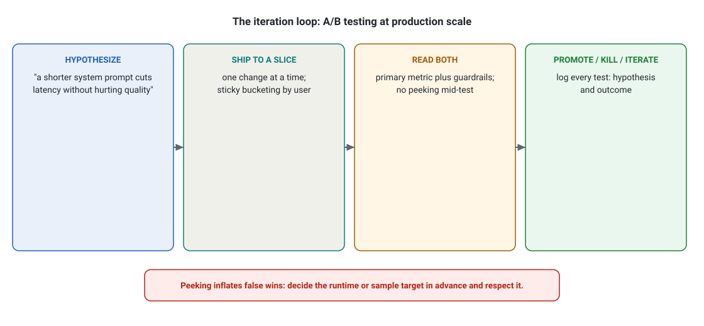
- Follow the arrows. Form a hypothesis. Ship one change to a slice of traffic with sticky bucketing. Read the primary metric plus guardrails. Then promote, kill, or iterate.
- The red banner is the discipline: peeking inflates false wins, so decide the runtime or sample target in advance and respect it.
- Takeaway: keep a log of every test. Teams that do not write down hypotheses repeat failed experiments.
8. Token, latency and cost optimization
Everything so far measures quality. Shipping is a three-way trade: quality, latency, cost. This section is the optimization toolkit, in the order the exam rewards: cache first, trim the waste second, route third, batch fourth, model downgrade last.
Every production Claude system lives inside a triangle: quality, latency, cost. Push one corner and the others move. The architect's job is not to minimize cost or maximize quality in isolation. It is to pick the point on the triangle the business asked for, and to know the price of moving.
Rung 1: the one-paragraph version. Measure everything the system spends in tokens: input tokens are what you send, output tokens are what the model writes (they cost more and take longer, because generation is sequential: each token waits for the previous one). The five optimizations below all attack the same bill from different angles, in a fixed order: caching first, model downgrade last.
Start with the vocabulary. A token is the unit the API bills and the model reads: roughly 3 to 4 characters of English per token. Input tokens are what you send (system prompt, documents, history). Output tokens are what the model writes. They cost more per token and take longer, because generation is sequential: each token waits for the previous one.
Prompt caching: the most valuable optimization
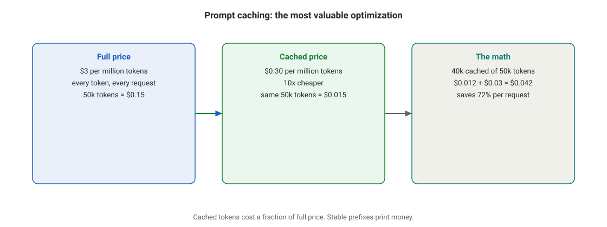
- Full price: $3 per million tokens. Cached: $0.30.
- The third panel works the example: 40k cached of 50k.
- Takeaway: stable prefixes save 72 percent per request.
Rung 2: one level deeper. Prompt caching lets you mark a prefix of your prompt (system instructions, reference documents) as cacheable. The provider stores its processed form and reuses it across requests instead of recomputing it every time. It exists because most production prompts repeat a large static prefix with a small changing suffix.
The economics, from published Anthropic pricing. These are the numbers to memorize:
- Cache write: 1.25 times the base input token price. You pay a 25 percent premium once to store the prefix.
- Cache read (hit): 0.1 times the base input price. Ten times cheaper than normal input tokens.
- TTL (time to live): how long the cache entry survives unused. Default 5 minutes; a 1 hour option exists at 2x the base input price for cache writes (versus 1.25x at the 5-minute TTL). TTL is the expiry timer: touch the entry with a matching prefix and the timer resets.
The critical constraint: caching works on exact prefix matches. If request A starts with [system + doc1 + doc2] and request B starts with [system + doc2 + doc1], the prefixes differ and the cache reuses nothing. Order your prompt with the most static content first and the most variable content last, or caching silently does nothing.
Worked example with real arithmetic
A support assistant sends a 10,000 token product manual with every request, plus 500 tokens of conversation. It serves 100 requests per hour. Base input price: $3 per million tokens (illustrative published tier).
- No cache: 100 requests times 10,500 tokens = 1,050,000 tokens. Cost: 1.05 x $3 = $3.15 per hour.
- With cache: one write of 10,000 tokens at 1.25x = 12,500 token equivalents = $0.0375. Then 99 requests hit the cache: 99 x 10,000 tokens at 0.1x = 99,000 token equivalents = $0.297. The 500 variable tokens per request are never cached: 100 x 500 = 50,000 tokens = $0.15. Total: 0.0375 + 0.297 + 0.15 = $0.48 per hour.
Same answers, 85 percent cheaper. The break even is after a single reuse of the prefix within the TTL window. The first cache hit repays the 25 percent write premium. That hit saves 90 percent of the prefix's input price. If nothing reuses the prefix before the TTL expires, you waste the 25 percent write premium.
write cost = 1.25 × prefix_tokens × price cached read = 0.10 × prefix_tokens × price
where: prefix_tokens, the static prompt content reused across requests. price, dollars per input token. Every cached hit saves 90% of the prefix cost. You pay the 25% write premium once.
Worked example. A 10,000-token prefix at $3 per million. Write premium: 0.25 × 10,000/1M × $3 = $0.0075. Each cache hit saves 0.90 × 10,000/1M × $3 = $0.027. The first reuse already repays the write. The paragraph above shows the full picture: $3.15 per hour uncached, $0.48 per hour cached, the same answers at 85 percent off.
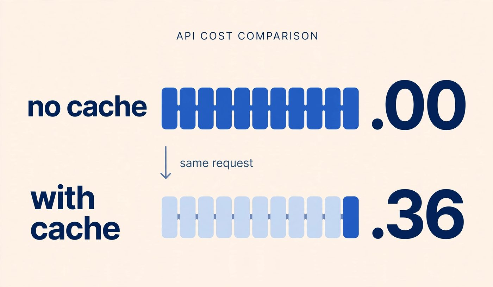
- Top row: no cache. Every token chip is full price blue. The total reads in whole dollars.
- Bottom row: with cache. Nine chips are pale (cache hits at one tenth price), one is full blue (the write premium plus the variable suffix). The total reads in cents: roughly a tenth of the row above.
- The arrow between them says same request. Nothing about quality changed. Only the billing did.
- Ask the exam question: when does this fail? When prefixes differ per request, when traffic is too sparse to reuse within TTL, or when the static block sits after variable content.
Teaching point: caching is the exam's favorite cost question. It has a clean trap: "enable caching" is wrong when every request has a unique prefix. The credited answer checks prefix stability first.
The rest of the optimization toolkit
Rung 3: the full picture. Five more optimizations, in the order the exam rewards:
- Output discipline. Output tokens cost more and stream slower. Ask for exactly what you need: "answer in under 100 words" or structured JSON instead of prose. Verbose defaults are a silent budget leak.
- Right size retrieval. In RAG, retrieving 20 chunks when 5 suffice multiplies input tokens. Tune chunk count on the eval set: quality first, then cut until quality moves.
- Context compaction. Long conversations grow the input every turn. Summarize older turns into a compact state and drop the raw history. This cuts tokens per request and often improves quality, because the model stops drowning in stale context.
- Model routing. Send easy requests to a small fast model (Haiku class) and hard ones to a large model (Sonnet or Opus class). A classifier or a rule (short question, no tools needed) does the routing. Typical split: 70 to 80 percent of traffic is easy. Routing cuts the bill by half or more while the hard cases keep top quality. The exam trap: routing everything to the biggest model "for quality" with no cost analysis.
- Batching. The Batch API processes non urgent requests at roughly half price with up to 24 hour turnaround. If the use case tolerates delay (nightly report generation, bulk classification), batching is the cheapest per token option. Never batch user facing chat.
When a scenario asks how to cut cost, apply optimizations in this order. 1) prompt caching (near free if prefixes repeat). 2) output discipline and retrieval right sizing (quality neutral). 3) model routing (small quality risk, big savings).
4) batching for delay tolerant work. 5) model downgrade as a last resort, validated on evals. Re-measure each step on the eval set before the next. The exam rewards this sequence and punishes jumping to step 5.
Scenario shape: a bill that is too high, or a latency budget that is blown. The credited answer picks the optimization that fits the constraint. Caching when prefixes repeat (check the trap: unique prefixes per request). Routing when traffic splits easy and hard.
Batching when the use case tolerates delay. Compaction when conversations grow. A second shape: compute which option is cheaper from token counts. Show the arithmetic, not the vibe.
The cheapest-model trap to carry: "optimization means using the cheapest model" is a distractor. Cost optimization means the best quality per dollar at the required latency. Sometimes that is a bigger model with caching and short outputs beating a small model that needs three retries to get it right. Retries are the hidden cost multiplier. A cheap model with a 30 percent retry rate can cost more than an expensive model that nails it first try.
Exam relevance: expect numbers. Know cache write 1.25x and read 0.1x, batching around half price, and the prefix match rule. The traps test whether you check the precondition before applying the optimization.
Next: observability and monitoring, seeing the system you shipped.
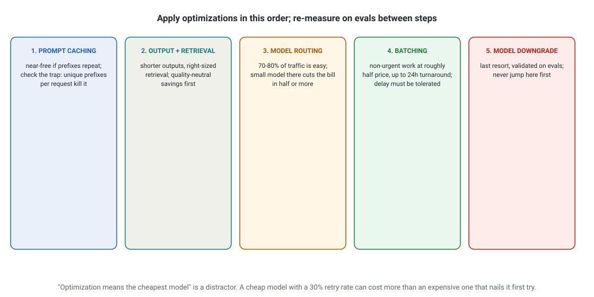
- The five cards run in exam-rewarded order. Prompt caching first, then output discipline and retrieval right-sizing, then model routing, then batching. Model downgrade is a last resort.
- Re-measure each step on the eval set before the next. The exam punishes jumping straight to step 5.
- Takeaway: a cheap model with a 30 percent retry rate can cost more than an expensive model that nails it first try.
9. Observability and monitoring: seeing the system in production
You can measure, compare, and optimize. Then the system goes live and you need to keep seeing it. This section is observability: traces, monitoring, and the logging contract that keeps traces useful and legal.
Observability means you can answer "what happened and why" for any request, from data you collected in advance. Logging records events. Observability is the ability to reconstruct the full story of a request. The story covers what the model saw, what it called, how long each step took, what it cost, and where it went wrong.
Rung 1: the one-paragraph version. A trace is the story of one request, told as nested spans (one timed operation inside another): the request contains the model call, which contains the tool call. Each span carries timing, identity, token usage, and outcome. Monitoring is the system built on top of traces.
Dashboards answer "is it healthy right now". Alerts with runbooks answer "wake someone up". Production evals answer "is quality drifting". The exam tests the logging contract: what each span carries, what gets redacted and when, and how traces feed the layers above.
Trace structure: the unit of understanding
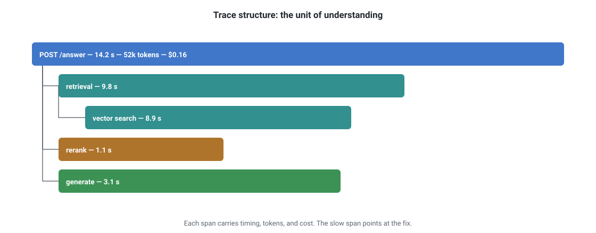
- The top bar is the whole request: 14.2 seconds.
- Nested bars show where the time went. Retrieval took 9.8 seconds.
- Takeaway: the slowest span tells you what to fix.
Rung 2: one level deeper. Trace: the complete record of one request, organized as a tree of spans. A span is one timed operation: the top span is the whole request, child spans are the model call, each tool call, each retrieval step. Spans nest, so you can see that the 8 second request spent 7 seconds inside one slow tool call.
Every span should carry the same core fields:
- Timing: start, end, duration. This is how you find the slow step.
- Identity: model name and version, prompt template version, request and session IDs. Without versions, you cannot compare before and after.
- Usage: input tokens, output tokens, cache hits. Tokens convert directly to cost.
- Outcome: stop reason, tool called with arguments, error codes, judge or rubric scores when available.
- Content pointers, not content: a hash of the prompt, not the prompt itself when it contains user data. You need reproducibility without storing secrets.
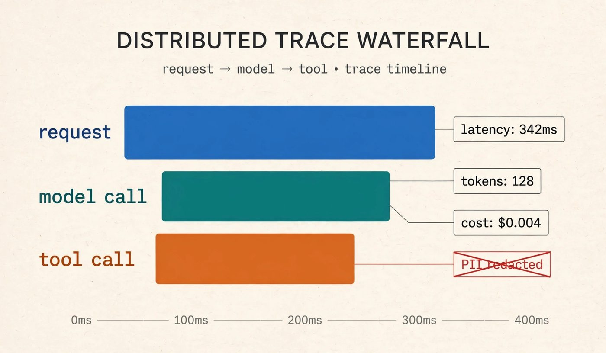
- The three bars are spans on a timeline (0 to 400 ms at the bottom). The long blue request span contains the teal model call span, which contains the orange tool call span. Nesting shows what happened inside what.
- Read the field tags on the right: latency 342ms on the request, tokens 128 and cost $0.004 on the model call. These are the fields from the list above.
- Find the red stamp on the tool call: PII redacted. The arguments contained personal data, so the pipeline stripped the values before it stored the trace. The structure (which tool, how long) remains.
- Ask the diagnostic question: if this request was slow, which bar is longest? The waterfall answers in one glance. That is the whole point of tracing.
Teaching point: the exam tests what to log and what to redact. Log structure, timing, versions, tokens and cost. Redact PII, credentials and raw user content. A trace that stores full prompts with customer data is a security finding, not good observability.
PII redaction and log hygiene
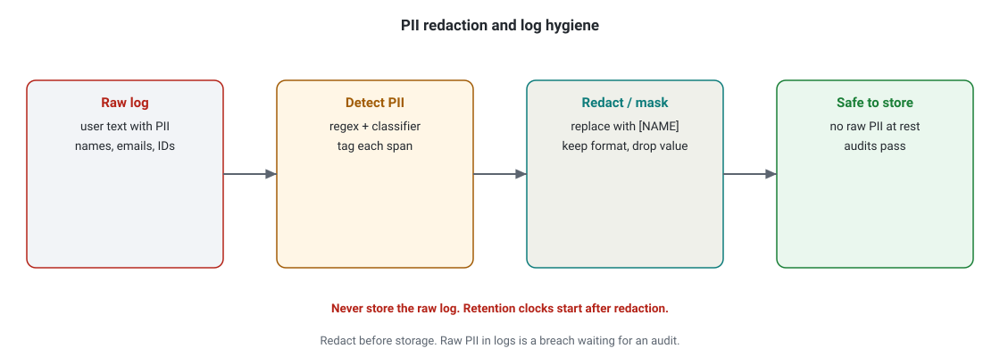
- Follow the arrows left to right.
- Detection tags each PII span. Redaction replaces values with labels.
- Takeaway: never store the raw log.
PII (personally identifiable information): any data that identifies a person: names, emails, account numbers, health details. Redaction: removing or masking PII before you store or ship the logs.
Rules that show up on the exam:
- Redact at collection, not at query time. Once raw PII sits in a log store, every person with log access can read it, and every breach includes it. Strip it in the logging pipeline before storage.
- Redact prompts, completions and tool arguments. All three can carry PII. A common pattern: store the trace structure plus hashes, keep full content only in a short lived, access controlled debug store with explicit retention.
- Watch for PII in model outputs too. A model that echoes a customer's account number into its answer puts PII in your logs through the completion path.
- Set retention windows. Debug traces with content: days. Aggregated metrics: months or years. The exam likes the principle of least retention: keep sensitive data only as long as its purpose needs.
From traces to monitoring
Rung 3: the full picture. Traces answer "what happened in this request". Monitoring answers "is the system healthy right now". Build it in three layers:
- Dashboards: live views of the metric families from section 3: quality scores, p50 and p95 latency, cost per request, safety refusal rates, error rates. Segmented, always (section 3's lesson applies to dashboards too).
- Alerts: thresholds on the dashboards with owners. Alert on symptom, not cause. "p95 latency above 4 seconds for 10 minutes" pages someone. "quality score dropped 5 points week over week" opens an investigation. Alert fatigue is real: every alert must have a runbook entry saying what to do.
- Production evals: the loop never stops. Sample live traffic. Score it with the judge plus human audit (sections 4 and 5). Watch for drift: quality decaying as user behavior shifts or the model version changes under you. A sudden quality drop with no code change on your side points at provider side drift: check the model version in your traces first.
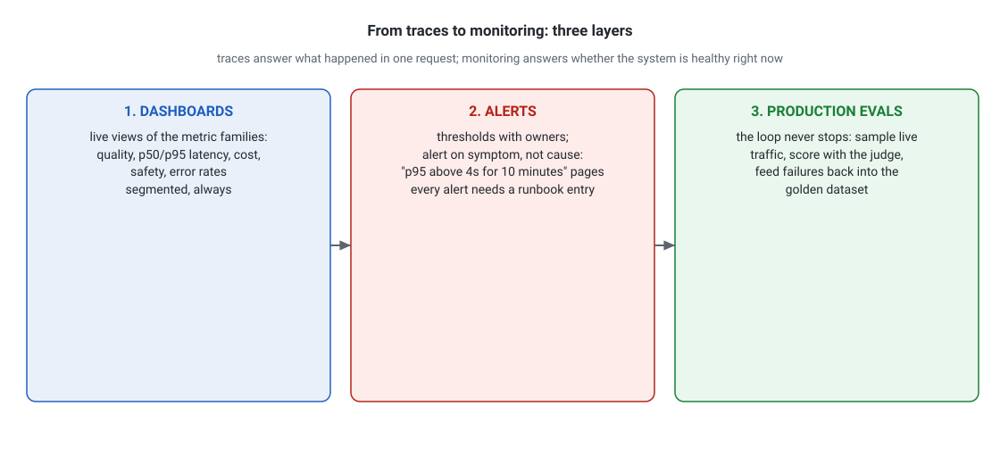
- The three layers. Dashboards show live views of the metric families, segmented always. Alerts put thresholds with owners on the dashboards and alert on symptom, not cause. Production evals sample live traffic and score it with the judge.
- Every alert needs a runbook entry, and alert fatigue is real.
- Takeaway: the loop never stops. Feed production failures back into the golden dataset.
Sampling: you cannot keep everything
Full tracing of every request is expensive and often unnecessary. Sampling means keeping a fraction of traces in full detail:
- Head based: decide at request start (keep 1 in 100). Cheap, but you miss rare failures.
- Tail based: decide after seeing the outcome (keep all errors and slow requests, sample the successes). Best signal per dollar: you always capture the interesting cases.
- Always keep aggregates. Even unsampled requests contribute to counters and histograms, so dashboards stay complete while detailed traces stay affordable.
Scenario shape: "quality dropped in production, what do you check first?" The credited path has three steps. Dashboards segmented by version and segment. Then traces of failing requests.
Then the eval suite to confirm. The traps: retrain or switch models immediately (no diagnosis), or log full user prompts to debug (PII violation). A second shape: design logging for a regulated use case. The credited answer redacts PII at collection, keeps versioned traces, and sets short retention on content.
The dashboard trap to carry: "monitoring means watching a dashboard" is a distractor. Dashboards without alerts are television. Alerts without runbooks are noise. Production evals without a feedback loop are trivia. The exam's credited answers always close the loop: detect, alert, diagnose from traces, fix, verify on the eval set.
Exam relevance: observability questions test the logging contract. They test what each span carries, what gets redacted and when, and how traces feed dashboards, alerts and production evals. "Log everything including user data" is always wrong.
Next: the exam checklist, the whole domain on one page.
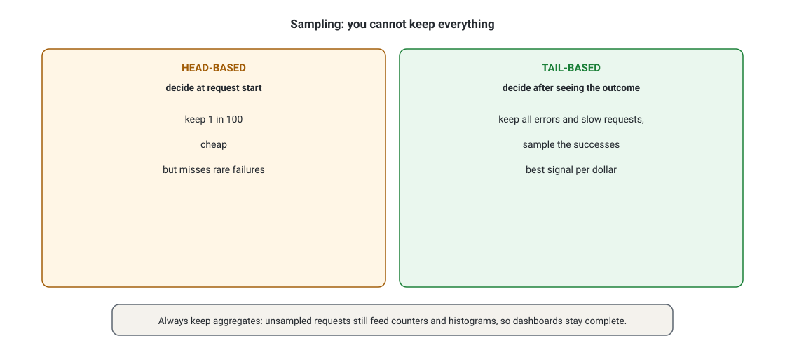
- Head-based sampling decides at request start: keep 1 in 100. Cheap, but it misses rare failures.
- Tail-based sampling decides after seeing the outcome: keep all errors and slow requests, sample the successes. Best signal per dollar.
- Takeaway: always keep aggregates so dashboards stay complete while detailed traces stay affordable.
Exam checklist: D4 in one page
Read this last, the night before. If every line below feels obvious, you are ready.
- Metrics: match the metric to the task (precision/recall per class, rubric scores for generation, task success for agents). Report latency as p50/p95, never just the mean. Name guardrail metrics for every optimization.
- The segment trap: an overall number never satisfies a per segment bar. Always slice metrics by the dimensions the requirement names. 96% overall with a failing segment means do not ship.
- Datasets: golden sets from sampled production traffic, human verified labels, held-out split, versioned. Never tune on the test split; never let test cases leak into prompts.
- Mixed methods: rule checks for everything checkable, LLM judge for the bulk, human review for sampled audits and calibration. Layer by cost.
- LLM-as-judge: rubric with anchors, temperature 0, structured output. Four biases: self preference, verbosity, position, drift. Calibrate against humans (kappa above ~0.6), pin the judge version, blind the judge.
- A/B tests: one variable, sticky per user randomization, pre registered primary plus guardrail metrics, enough runtime to cover weekly patterns, no peeking. B ships only if it wins and no guardrail trips.
- Diagnosis: invented facts need grounding (retrieval, citations). Missed instructions need prompt repair. Hard reasoning failures need a bigger model or decomposition. Reproduce, isolate the layer, change one thing, read the trace.
- Cost: cache write 1.25x, cache read 0.1x, exact prefix match required, static content first. Optimization order: caching, output discipline, retrieval sizing, model routing, batching for delay tolerant work, downgrade last with evals.
- Observability: traces as nested spans with timing, versions, tokens, cost, outcomes. Redact PII at collection. Dashboards segmented, alerts with runbooks, production evals watching for drift. Tail based sampling for signal per dollar.
Across all of D4, the exam rewards one instinct above all: measure before you act, and distrust the single number. The wrong answers ship on vibes, optimize blindly, or trust an uncalibrated judge. The right answers define the metric, slice it, test the change, check the guardrails, and only then decide.
You can now prove a system works before it ships. The toolkit: properties over exact matches, the eval flywheel, metrics matched to tasks, calibrated judges, disciplined A/B tests, and optimization in the exam's order. The next volume covers what happens when systems go live and touch the real world: D5 · Governance, Safety & Risk (14%). There the measured system meets failure modes, guardrails, and the law.